LITEMATICA 文档整理
投影与投影打印机
使用技巧
从选区与复制投影，到原理图的加载、摆放与编辑，再到投影打印机的开关、模式与速度设置，按原文顺序与层级整理为可跳转的页面。
基础教程
选区与复制投影
共 2 节：先用木棍划定选区，再把选区保存为原理图，或临时复制成投影。
01
选区
手持木棍点两个方块，就能划定一个长方体选区。
- 手持木棍，左键点击方块 A、右键点击方块 B，即可完成选区。
需要精确调整时，可以用区域编辑器，或切换到选区工具。
- 按 M → ，调整选区角点坐标。
- 手持木棍，切换到模式 1（选区工具），Ctrl + 滚轮 调整；注意调整的是当前选中的那个角点。
- 对准角点按下滚轮键可选中该角点；如果不对准角点，则选中的是整个选区，此时 Ctrl + 滚轮 调整的是整个选区。
- 选区内可以使用打印机进行挖掘、填充、排流体等操作。
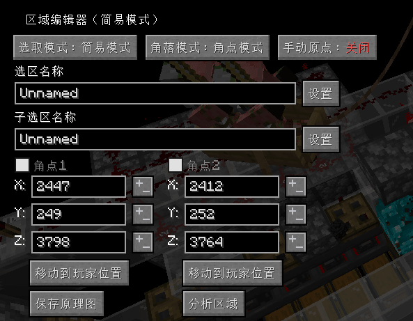
02
复制投影
完成选区后，有两种方式把选区变成投影。
第一种 · 保存投影到文件
- 先按上一节完成选区。
- M → → 。
- 推荐填写选区名称，保存的文件名就是这个名称，也可以在保存时修改。
第二种 · 临时复制选区
- M → → ，为「克隆选取」设置快捷键。
- 选区后按该快捷键，即可临时复制选区为投影。
- 想保存这个临时投影，去 M → → 。
第一部分
投影使用技巧
共 13 个技巧：如何放置与调整原理图，以及微调、渲染层、方块替换、单人模式粘贴，和轻松放置、原理图验证等补充技巧。
01
如何放置原理图
通过主菜单加载要投影的原理图。
- 按 M 打开主菜单。
- 点击「加载原理图」。
- 在列表中选中要加载的原理图。
- 点击「加载」。
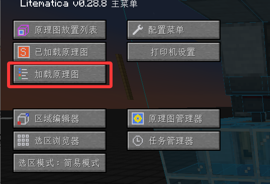
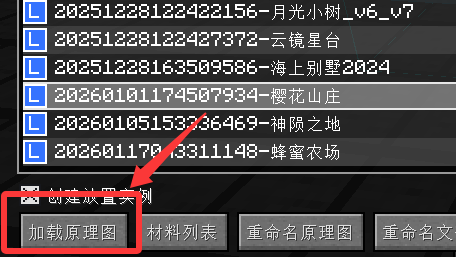
02
调整原理图位置
已加载的原理图可以整体调整位置、旋转与镜像。
- 小键盘 - 号，或 M → 原理图放置列表 → ，可以调整位置、旋转镜像等等。
- 手持木棍，Ctrl + 滚轮，切换到「2-原理图放置」。
- 手持木棍，左键或右键点击地面等方块。
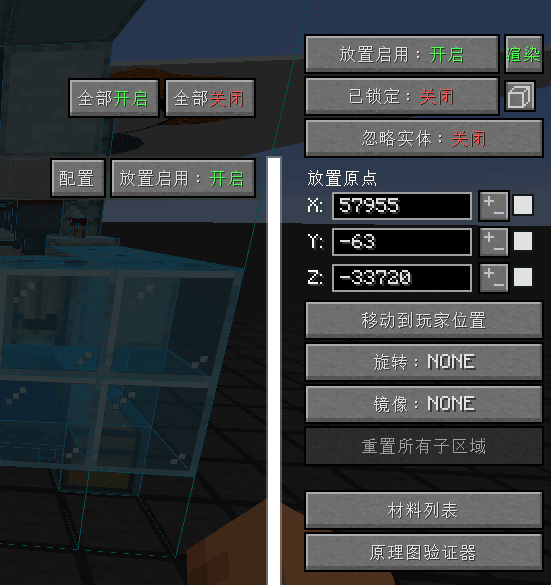
03
微调原理图
在「原理图放置」模式下对位置做精细调整。
- 切换到「2-原理图放置」。
- Alt + 滚轮，以自己的朝向滚动前后左右；面朝下时，就是上下。
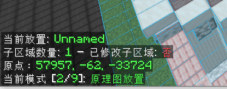
04
渲染层调整
按层级查看或调整原理图的渲染内容。
- M + PageUp 或 M + PageDown。
- M → → ，修改层级。
- 之后使用 PageUp 或 PageDown 调整层级。
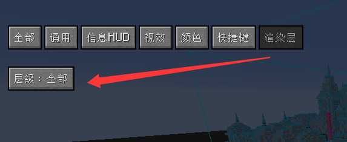
05
替换投影方块
直接在投影区内逐个替换方块。
- 手持木棍，Ctrl + 滚轮，切换到「9-编辑原理图」。
- 左键删除方块，右键放置方块，只在投影区内有效。
注意删除与放置操作只在投影区内有效。
06
批量替换投影方块
先为批量操作绑定快捷键，再到编辑模式中执行。
-
快捷键 M → → ，找到以下可绑定的操作：
- 原理图编辑-替换所有此方块
- 原理图编辑-破坏或添加所有此方块
- 原理图编辑-破坏或添加一列方块
- 手持木棍，Ctrl + 滚轮，切换到「9-编辑原理图」。
- 按住快捷键，左右键进行操作，单人模式下自己练习一下。
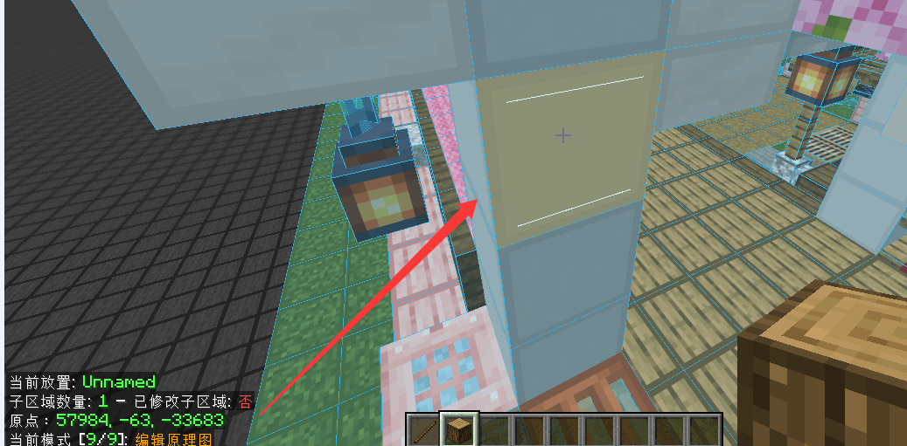
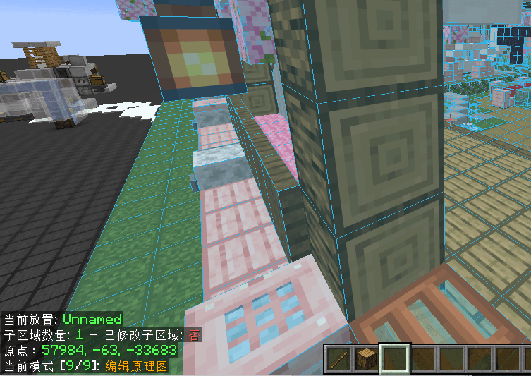
07
单人模式粘贴原理图
在单人模式下把原理图直接粘贴到世界中。
- 快捷键 M → → → 。
- 手持木棍，Ctrl + 滚轮，切换到「5-粘贴原理图」。快捷键执行
08
轻松放置
开启轻松放置后，对准投影右键即可放置方块。
- 快捷键 M → → ，找到「轻松设置-开关键」并设置。
- 按下设置好的开关，对准投影点击右键。
- 包裹内有对应方块时就会放置。
09
楼梯方向错误
放置楼梯时方向错误，可能是服务器不支持协议。
- 快捷键 M → → → 。
- 修改版本后再次尝试。
10
禁用投影木棍
需要停用投影木棍时，使用组合键关闭。
M+T
11
不显示原理图
隐藏原理图的显示。
- 快捷键 M + R，同时禁用投影木棍。
12
不渲染也可以打印
不渲染原理图也能继续打印，可缓解过大原理图带来的渲染困难。
- 快捷键 M → → → ，并设置一个快捷键。
- 可解决打印过大的原理图导致的渲染困难。
13
原理图验证
用原理图验证器检查缺失、错误方块，并定位到具体位置。
- 快捷键 小键盘 - 号，或 M → → 。
- 验证原理图。
- 验证之后点击「缺失」「错误」等标签，再点击具体项目，就会高亮对应位置的方块。
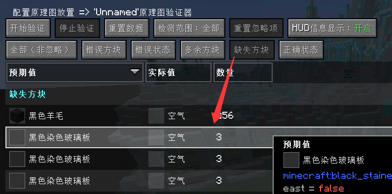
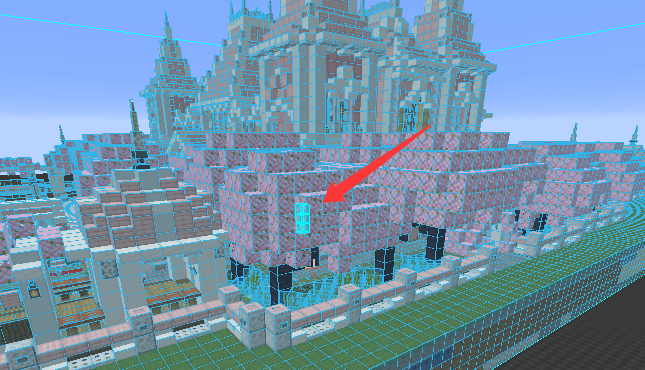
第二部分
投影打印机使用技巧
共 6 个技巧：设置界面的打开方式、快捷键绑定、工作模式切换，以及放置与破坏速度。
01
如何打开打印机设置界面
- 快捷键 M → 。
- 或 Z + Y；打印机版本不同，快捷键可能不同。
02
设置打印快捷键
→
→
03
工作模式切换
→
→
- 切换时最好先关闭工作
- (打印机版本不同)破基岩如果提示缺少mod:bedrock-miner,请安装。
- 破末地传送门框架以及末地门，在\config\bedrockminer.json中的blockWhitelist添加:末地门框架"minecraft:end_portal_frame"，或末地门："minecraft:end_portal"
04
放置速度
- 放置间隔：时间根据服务器不同，不建议低于 1。
- 如果打印的材料种类比较多容易出错，将放置间隔增加到 2 或者更高。
- 每刻放置方块：1（个人推荐）。
说明「每刻放置方块 1」与放置间隔的具体数值均为原文的个人推荐，请以所在服务器的限制为准。
05
破坏速度
- 破坏间隔 1。
- 每刻破坏 5-10（个人推荐）。
- tweakeroo打开自动切换工具。
06
其他
- 三改、四改打印机，在某些方块白名单或黑名单中，可以直接使用中文，也可以使用注册名。
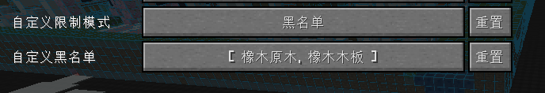
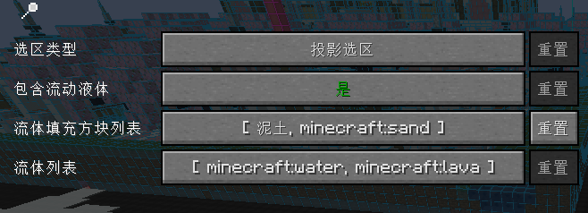
附
参数速查
以下数值均来自原文「放置速度」「破坏速度」两节，便于快速查阅。
| 项目 | 建议值 | 原文说明 |
|---|---|---|
| 放置间隔 | 不低于 1；推荐 1 | 不建议低于 1；推荐每刻放置方块 1（个人推荐） |
| 放置间隔（材料多时） | 2 或更高 | 材料种类比较多、容易出错时，将放置间隔增加 |
| 破坏间隔 | 1 | 原文直接给出破坏间隔 1 |
| 破坏速度 | 每刻 5-10 | 个人推荐 |